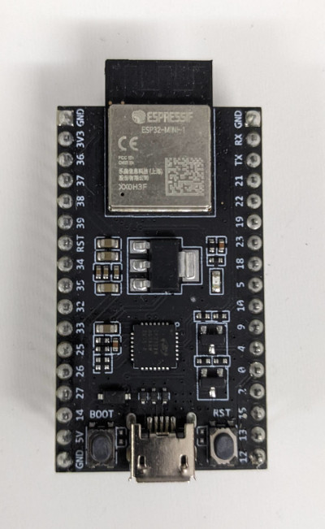
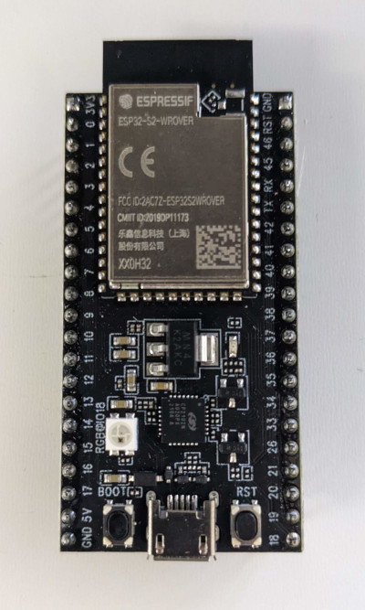

Download
STABLE RELEASE
ESP32forth-{{STABLE_VERSION}}.zip
- Single .ino file ready for installation
Version: {{STABLE_VERSION}} (Stable)
LONG TERM STABLE RELEASE
ESP32forth-{{OLD_STABLE_VERSION}}.zip
- Single .ino file ready for installation
Version: {{OLD_STABLE_VERSION}} (Long-term Stable)
Beta Release
ESP32forth-{{VERSION}}.zip
- Single .ino file ready for installation
Version: {{VERSION}} (Beta)
Release Archive - Prior Releases
http://github.com/flagxor/ueforth - Complete Unprocessed Source Code
License
NOTE: Although Esp32forth is licensed under Apache 2.0,
please be aware that binaries built with the Arduino IDE (such as ESP32forth) include
components and libraries under
other additional licenses.
The ESP32 plugin for Arduino is also under a
different license.
Additionally, the ESP32 toolchain used by Arduino, contains further components under
other licenses.
Be sure to consult a lawyer before using for comercial purposes.
Copyright 2021 Bradley D. Nelson
Licensed under the Apache License, Version 2.0 (the "License");
you may not use this file except in compliance with the License.
You may obtain a copy of the License at
http://www.apache.org/licenses/LICENSE-2.0
Unless required by applicable law or agreed to in writing, software
distributed under the License is distributed on an "AS IS" BASIS,
WITHOUT WARRANTIES OR CONDITIONS OF ANY KIND, either express or implied.
See the License for the specific language governing permissions and
limitations under the License.
Install
Download the Arduino IDE for your platform.
Go to File > Preferences.
Under Additional Board Manager URLs add:
- For ESP32 -
https://dl.espressif.com/dl/package_esp32_index.json - For ESP32-S2 or ESP32-C3 -
https://raw.githubusercontent.com/espressif/arduino-esp32/gh-pages/package_esp32_dev_index.json
Select your serial port under Tools > Port.
Under Tools choose board and settings as below under Tools.
| BOARD | ESP32 Version | Tools Settings | ||
|---|---|---|---|---|
|
OTHER ESP32-XXX BOARDS Use a more exact board selection or consult documentation to choose equivalent Dev Module settings. Your mileage may vary. NOTE: Not all ESP-32 boards are compatible with Arduino. |
2.0.1 |
Board: Your board type OR closest Dev Module Partition Scheme: Favor more App storage if option available |
||
ESP32-WROOM
|
1.0.6 |
Board: ESP32 Dev Module Partition Scheme: No OTA (2M APP, 2M SPIFFS) ← Non-default Upload Speed: 921600 CPU Frequency: 240MHz Flash Frequency: 80MHz Flash Mode: QIO Flash Size: 4MB (32Mb) Core Debug Level: None PSRAM: Disable Arduino Runs On: Core 1 Events Run On: Core 1 |
||
|
ESP32-WROVER |
1.0.6 |
Board: ESP32 Dev Module Partition Scheme: No OTA (2M APP, 2M SPIFFS) ← Non-default Upload Speed: 921600 CPU Frequency: 240MHz Flash Frequency: 80MHz Flash Mode: QIO Flash Size: 4MB (32Mb) Core Debug Level: None PSRAM: Enabled Arduino Runs On: Core 1 Events Run On: Core 1 |
||
ESP32-CAM


|
1.0.6 |
Board: AI Thinker ESP32-CAM |
||
|
ESP32-MINI-1 ESP32-SOLO-1  NOT CURRENTLY SUPPORTED |
N/A |
NOT CURRENTLY SUPPORTED Arduino builds ESP32 assuming dual core, but the SOLO and MINI have only one core. |
||
ESP32-S2-WROOM
|
2.0.1 |
Board: ESP32S2 Dev Module Partition Scheme: No OTA (2M APP, 2M SPIFFS) ← Non-default Upload Speed: 921600 USB CDC On Boot: Disabled USB Firmware MSC On Boot: Disabled USB DFU On Boot: Disabled Upload Mode: UART0 CPU Frequency: 240MHz Flash Frequency: 80MHz Flash Mode: QIO Flash Size: 4MB (32Mb) Core Debug Level: None PSRAM: Disabled |
||
|
ESP32-S2-WROVER  |
2.0.1 |
Board: ESP32S2 Dev Module Partition Scheme: No OTA (2M APP, 2M SPIFFS) ← Non-default Upload Speed: 921600 USB CDC On Boot: Disabled USB Firmware MSC On Boot: Disabled USB DFU On Boot: Disabled Upload Mode: UART0 CPU Frequency: 240MHz Flash Frequency: 80MHz Flash Mode: QIO Flash Size: 4MB (32Mb) Core Debug Level: None PSRAM: Enabled |
||
|
2.0.1 |
Board: ESP32C3 Dev Module Partition Scheme: No OTA (2M APP, 2M SPIFFS) ← Non-default Upload Speed: 921600 USB CDC On Boot: Disabled CPU Frequency: 160MHz Flash Frequency: 80MHz Flash Mode: QIO Flash Size: 4MB (32Mb) Core Debug Level: None PSRAM: Disabled |

{kind=link}
{kind=link}
{kind=link}
Use
Initially ESP32forth can be interacted with over a serial port (over USB).
You can do this from the Arduino IDE's Serial Monitor option.
Be sure to config the serial port to: baud rate = 115200, data bits = 8, stop bits = 1, and parity = N.
On boot, ESP32forth configures PIN 2 (typically an LED) to be an output and brings it HIGH (lighting the LED after boot).
ESP32forth Features
ESP32forth Specific Words
{{COMMON}} {{POSIX_COMMON}}ESP32forth Bindings
Because Arduino builds a statically linked image for flashing into ESP32 devices, all C function bindings need to be explicitly added. This is the current collection. Typically to reduce confusion, function names have be preserved even through verbose. In popular cases a shorted higher level name is provided.
See template.ino.
Allocation
These words are inside theinternals vocabulary.
MALLOC ( n -- a | 0 ) System malloc SYSFREE ( a -- ) System free REALLOC ( a n -- a | 0 ) System realloc
Serial
These words are inside theSerial vocabulary.
Serial.begin ( baud -- ) Start serial port Serial.end ( -- ) End serial port Serial.available ( -- f ) Is serial data available Serial.readBytes ( a n -- n ) Read serial bytes, return number gotten Serial.write ( a n -- n ) Write serial bytes Serial.flush ( -- ) Flush serial buffer
Serial Bluetooth
These words are inside thebluetooth vocabulary.
SerialBT.new ( -- bt ) Allocate new BT object SerialBT.delete ( bt -- ) Free BT object SerialBT.begin ( localname ismaster bt -- f ) SerialBT.end ( bt -- ) SerialBT.available ( bt -- f ) SerialBT.readBytes ( a n bt -- n ) SerialBT.write ( a n bt -- n ) SerialBT.flush ( bt -- ) SerialBT.hasClient ( bt -- f ) SerialBT.enableSSP ( bt -- ) SerialBT.setPin ( z bt -- f ) SerialBT.unpairDevice ( addr bt -- f ) SerialBT.connect ( remotename bt -- f ) SerialBT.connectAddr ( addr bt -- f ) SerialBT.disconnect ( bt -- f ) SerialBT.connected ( timeout bt -- f ) SerialBT.isReady ( checkMaster timeout -- f ) Default checkMaster=false, timeout=0
Bluetooth
These words are inside thebluetooth vocabulary.
esp_bt_dev_get_address ( -- a ) addr of 6 byte mac address
GPIO
pinMode ( pin mode -- ) Set GPIO pin mode digitalWrite ( pin value -- ) Set GPIO pin state analogRead ( pin -- n ) Analog read from 0-4095 pulseIn ( pin value usec -- usec/0 ) Wait for a pulseAvailable on devices other than ESP32-C3:
dacWrite ( pin 0-255 -- ) Write to DAC (pin 25, 26)
ledc
These words are inside theledc vocabulary.
ledcSetup ( channel freq resolution -- freq ) ledcAttachPin ( pin channel -- ) ledcDetachPin ( pin -- ) ledcRead ( channel -- n ) ledcReadFreq ( channel -- freq ) Get frequency (x 1,000,000) ledcWrite ( channel duty -- ) ledcWriteTone ( channel freq ) Write tone frequency (x 1000) ledcWriteNote ( channel note octave -- freq )
Short GPIO Names
pin ( value pin# -- ) Set GPIO pin value adc ( pin# -- n ) Analog read pin, result 0-1023
System
MS ( n -- ) Pause for some number of milliseconds. MS-TICKS ( -- n ) Time since start in milliseconds. TERMINATE ( n -- ) Call system exit.
Files
R/O ( -- mode ) R/W ( -- mode ) W/O ( -- mode ) BIN ( mode -- mode ) CLOSE-FILE ( fh -- ior ) OPEN-FILE ( a n mode -- fh ior ) CREATE-FILE ( a n mode -- fh ior ) DELETE-FILE ( a n -- ior ) WRITE-FILE ( a n fh -- ior ) READ-FILE ( a n fh -- n ior ) FILE-POSITION ( fh -- n ior ) REPOSITION-FILE ( n fh -- ior ) FILE-SIZE ( fh -- n ior )
WiFi
These words are inside theWiFi vocabulary.
WiFi.config ( ip dns gateway subnet -- ) Packaged a.b.c.d little-endian Wifi.begin ( ssid-z password-z -- ) Wifi.disconnect ( -- ) WiFi.status ( -- n ) WiFi.macAddress ( a -- ) WiFi.localIP ( -- ip ) WiFi.mode ( mode -- ) WIFI_MODE_NULL WIFI_MODE_STA WIFI_MODE_AP WIFI_MODE_APSTA WiFi.setTxPower ( powerx4 -- ) Set power x4 WiFi.getTxPower ( -- powerx4 ) Get power x4 ( In 7.0.6.17 and up ) WiFi.softAP ( ssid password/0 -- success ) WiFi.softAPIP ( -- ip ) WiFi.softAPBroadcastIP ( -- ip ) WiFi.softAPNetworkID ( -- ip ) WiFi.softAPConfig ( localip gateway subnet -- success ) WiFi.softAPdisconnect ( wifioff -- success ) WiFi.softAPgetStationNum ( -- num )
mDNS
MDNS.begin ( name-z -- ) Start multicast dns
SPI Flash
These words are inside thespi_flash vocabulary.
spi_flash_init ( -- ) Init driver access. spi_flash_get_chip_size ( -- n ) Get flash size. spi_flash_erase_sector ( sector -- err ) Erase a sector. spi_flash_erase_range ( addr size -- err ) Erase a range. spi_flash_write ( destaddr src size -- err ) Write to flash. spi_flash_write_encrypted ( destaddr src size -- err ) Write encrypted. spi_flash_read ( srcaddr dst size -- err ) Read from flash. spi_flash_read_encrypted ( srcaddr dst size -- err ) Read encrypted. spi_flash_mmap ( srcaddr size memtype out outhandle -- err ) Map region. spi_flash_mmap_pages ( pages pages# memtype out outhandle -- err ) Map pages. spi_flash_munmap ( handle -- ) Unmap region. spi_flash_mmap_dump ( -- ) Dump memory map. spi_flash_mmap_get_free_pages ( memtype -- n ) Get free pages. spi_flash_cache2phys ( a -- addr ) Get flash addr. spi_flash_phys2cache ( addr memtype -- a ) Get mapped flash addr. spi_flash_cache_enabled ( -- f ) Is flash enabled. esp_partition_t_size ( -- n ) sizeof(esp_parition_t). esp_partition_find ( type subtype szlabel -- it ) Get partition iterator. esp_partition_find_first ( type subtype szlabel -- part ) Get first partition. esp_partition_get ( it -- part ) Get current partition. esp_partition_next ( it -- it' ) Get next partition. esp_partition_iterator_release ( it -- ) Free iterator. esp_partition_verify ( part -- part' ) Verify partition. esp_partition_read ( part srcoff dst size -- err ) Read from partition. esp_partition_write ( part dstoff src size -- err ) Write to partition. esp_partition_erase_range ( part start size -- err ) Erase range. esp_partition_mmap ( part off size memtype out outhandle -- err ) Map memory. esp_partition_get_sha256 ( part a -- err ) Get sha256 digest. esp_partition_check_identity ( part part -- f ) Check partitions for equality.
SPIFFS
These words are inside theSPIFFS vocabulary.
SPIFFS.begin ( format-on-fail path-z max-files -- f ) SPIFFS.end ( -- ) SPIFFS.format ( -- f ) SPIFFS.totalBytes ( -- n ) SPIFFS.usedBytes ( -- n )
WebServer (DEPRECATED)
These words are inside theWebServer vocabulary.
Removed in 7.0.6.14, use httpd instead.
WebServer.new ( port -- ws ) Allocate new webserver object WebServer.delete ( ws -- ) Delete webserver object WebServer.begin ( port ws -- ) WebServer.stop ( ws -- ) WebServer.on ( path-z xt ws -- ) Set up a web path handle callback WebServer.handleClient ( ws -- ) Handle one client request WebServer.hasArg ( z ws -- f ) By name WebServer.arg ( z ws -- z ) By name WebServer.argi ( n ws -- z ) By index WebServer.argName ( n ws -- z) By index WebServer.args ( ws -- n ) Number of args WebServer.setContentLength ( n ws -- ) WebServer.sendHeader ( name-z value-z fist ws -- ) WebServer.send ( code mimetype data ws -- ) WebServer.sendContent ( z ws -- ) WebServer.method ( ws -- n ) GET / POST etc.
httpd
These words are inside thehttpd vocabulary.
server ( port -- ) Run a webserver on a port (in background, returns immediately).
handleClient ( -- f ) Wait for a client to connect, true if connected.
path ( -- a n ) Get request path.
method ( -- a n ) Get request method (GET/POST).
header ( a n -- a n ) Get header value or empty string.
body ( -- a n ) Get request body.
response ( mime mime# result result# status -- ) Respond with a particular mime type result and status.
ok-response ( mime mime# ) Response with a HTTP 200.
bad-response ( -- ) Response with HTTP 400 Bad request.
notfound-response ( -- ) Response with HTTP 404 Not found.
send ( a n -- ) Send response bytes.
NOTE: You may want to use this feature in tandem with tasks / streams.
Example:
also httpd
: handle-index
s" text/html" ok-response r|
Hi!
| send ;
: handle1
." Got a request for: " path type cr
path s" /" str= if handle-index exit then
notfound-response
;
: run 8080 server
begin handleClient if handle1 then pause again ;
run
Wire
These words are inside theWire vocabulary.
Wire.begin ( -- f ) Wire.setPins ( sda scl -- f ) Wire.setClock ( frequency -- ) Wire.getClock ( -- frequency ) Wire.setTimeout ( ms -- ) Default is 50ms Wire.getTimeout ( -- ms ) Wire.beginTransmission ( n -- ) Wire.endTransmission ( sendstop -- f ) Default is true Wire.requestFrom ( address quantity sendstop -- n ) Wire.write ( a n -- n ) Wire.available ( -- f ) Wire.read ( -- ch ) Wire.peek ( -- ch ) Wire.flush ( -- )These words were available in v7.0.6.5 and before, but are now deprecated as the underlying Arduino functions have gone away in the v2.0.1 ESP32 Arduino library.
Wire.lastError ( -- n ) Wire.getErrorText ( n -- z ) Wire.busy ( -- f ) Wire.writeTransmission ( addr a n sendstop -- err ) Wire.readTransmission ( addr a n sendstop acount -- err )
Camera
These words are inside thecamera vocabulary.
esp_camera_init ( config -- f ) esp_camera_deinit ( -- f ) esp_camera_fb_get ( -- fb ) esp_camera_fb_return ( fb -- ) esp_camera_sensor_get ( -- sensor )
Camera Server
Requires v7.0.6+
WIP Prototype - Not yet stableThese words are inside the
camera-server vocabulary.
server ( port -- ) Start an image server at port,
e.g. http://IP/image will produce an image
SD
These words are inside theSD vocabulary.
They allow use of an SDcard over SPI.
SD.begin ( -- ok ) uses all the defaults "/sd" etc.
SD.beginDefaults ( -- sspin SPIClass frequency mountpointsz maxfiles format_if_empty )
( SS SPI 4000000 "/sd" 5 false )
SD.beginFull ( sspin SPIClass frequency mountpoint maxfiles format_if_empty -- ok )
SD.end ( -- )
SD.cardType ( -- n )
SD.totalBytes ( -- n )
SD.usedBytes ( -- n )
SD_MMC
These words are inside theSD_MMC vocabulary.
They allow use of an SDcard over MMC internal interface.
Note, SD_MMC is unavailable on ESP32-S2 and ESP32-C3.
SD_MMC.begin ( -- ok ) uses all the defaults "/sdcard" etc.
SD_MMC.beginDefaults ( -- mountsz mode1bit format_if_fail )
( "/sdcard" false false )
( sdmmc_freq not supported for generality )
SD_MMC.beginFull ( mountsz mode1bit format_if_fail -- ok )
SD_MMC.end ( -- )
SD_MMC.cardType ( -- n )
SD_MMC.totalBytes ( -- n )
SD_MMC.usedBytes ( -- n )
Interrupts
These words are inside theINTERRUPTS vocabulary.
High Level words:
pinchange ( xt pin -- ) Call xt when pin changes.
Example:
17 input pinMode : test ." pinvalue: " 17 digitalRead . cr ; ' test 17 pinchange
Interrupts
These words are inside theinterrupts vocabulary.
ESP_INTR_FLAG_DEFAULT -- Default handler allows per pin routing Various triggers: #GPIO_INTR_DISABLE #GPIO_INTR_POSEDGE #GPIO_INTR_NEGEDGE #GPIO_INTR_ANYEDGE #GPIO_INTR_LOW_LEVEL #GPIO_INTR_HIGH_LEVEL gpio_config ( gpio_config_t* -- 0/err ) gpio_reset_pin ( pin -- 0/err ) gpio_set_intr_type ( pin type -- 0/err ) gpio_intr_enable ( pin -- 0/err ) gpio_intr_disable ( pin -- 0/err ) gpio_set_level ( pin level -- 0/err ) gpio_get_level ( pin -- level ) gpio_set_direction ( pin mode -- 0/err ) gpio_set_pull_mode ( pin mode -- 0/err ) gpio_wakeup_enable ( pin type -- 0/err ) gpio_wakeup_disable ( pin -- 0/err ) gpio_pullup_en ( pin -- 0/err ) gpio_pullup_dis ( pin -- 0/err ) gpio_pulldown_en ( pin -- 0/err ) gpio_pulldown_dis ( pin -- 0/err ) gpio_hold_en ( pin -- 0/err ) gpio_hold_dis ( pin -- 0/err ) gpio_deep_sleep_hold_en ( -- ) gpio_deep_sleep_hold_dis ( -- ) gpio_install_isr_service ( a -- ) Typically ESP_INTR_FLAG_DEFAULT gpio_uninstall_isr_service gpio_isr_handler_add ( pin xt arg -- 0/err ) gpio_isr_handler_remove ( pin -- 0/err ) gpio_set_drive_capability ( pin cap -- 0/err ) gpio_get_drive_capability ( pin cap* -- 0/err ) esp_intr_alloc ( source flags xt args handle* -- 0/err ) esp_intr_free ( handle -- 0/err )
Timers
These words are inside thetimers vocabulary.
timer_isr_register ( group timer xt arg ret -- 0/err )
RMT
These words are inside theRMT vocabulary.
rmt_set_clk_div ( channel div8 -- err ) rmt_get_clk_div ( channel @div8 -- err ) rmt_set_rx_idle_thresh ( channel thresh16 -- err ) rmt_get_rx_idle_thresh ( channel @thresh16 -- err ) rmt_set_mem_block_num ( channel memnum8 -- err ) rmt_get_mem_block_num ( channel @memnum8 -- err ) rmt_set_tx_carrier ( channel enable highlev lowlev carrierlev -- err ) rmt_set_mem_pd ( channel f -- err ) rmt_get_mem_pd ( channel @f -- err ) rmt_tx_start ( channel f -- err ) rmt_tx_stop ( channel -- err ) rmt_rx_start ( channel f -- err ) rmt_rx_stop ( channel -- err ) rmt_tx_memory_reset ( channel -- err ) rmt_rx_memory_reset ( channel -- err ) rmt_set_memory_owner ( channel owner -- err ) rmt_get_memory_owner ( channel @owner -- err ) rmt_set_tx_loop_mode ( channel f -- err ) rmt_get_tx_loop_mode ( channel @f -- err ) rmt_set_rx_filter ( channel enable thresh8 -- err ) rmt_set_source_clk ( channel baseclk -- err ) rmt_get_source_clk ( channel @baseclk -- err ) rmt_set_idle_level ( channel enable level -- err ) rmt_get_idle_level ( channel @enable @level -- err ) rmt_get_status ( channel @status -- err ) rmt_set_rx_intr_en ( channel enable -- err ) rmt_set_err_intr_en ( channel enable -- err ) rmt_set_tx_intr_en ( channel enable -- err ) rmt_set_tx_thr_intr_en (channel enable thresh -- err ) rmt_set_gpio ( channel mode gpio# invertsig -- err ) rmt_config ( rmt_config_t* ) rmt_isr_register ( fn arg allocflags handle -- err ) rmt_isr_deregister ( handle -- err ) rmt_fill_tx_items ( channel @items items# offset -- err ) rmt_driver_install ( channel rxbufsize allocflags -- err ) rmt_driver_uinstall ( channel -- err ) rmt_get_channel_status ( channel @status -- err ) rmt_get_counter_clock ( channel @clockhz -- err ) rmt_write_items ( channel @items items# wait -- err ) rmt_wait_tx_done ( channel time -- err ) rmt_get_ringbuf_handle ( channel @handle -- err ) rmt_translator_init ( channel fn -- err ) rmt_translator_set_context ( channel @context -- err ) rmt_translator_get_context ( channel @@context -- err ) rmt_write_sample ( channel src src# wait -- err ) rmt_register_tx_end_callback --- NOT SUPPORTED rmt_memory_rw_rst --- DEPRECATED USE rmt_tx_memory_reset or rmt_rx_memory_reset rmt_set_intr_enable_mask --- DEPRECATED interrupt handled by driver rmt_clr_intr_enable_mask --- DEPRECATED interrupt handled by driver rmt_set_pin --- DEPRECATED use rmt_set_gpio instead
Tasks
These words are inside theTASKS vocabulary.
PAUSE ( -- ) Yield to other tasks.
MS ( n -- ) Pause for some number of milliseconds (yields to other tasks).
TASK ( xt dsz rsz "name" -- ) Create a new task with dsz size data stack
and rsz size return stack running xt.
START-TASK ( task -- ) Activate a task.
.TASKS ( -- ) List running tasks.
Example:
tasks
: hi begin ." Time is: " ms-ticks . cr 1000 ms again ;
' hi 100 100 task my-counter
my-counter start-task
Timers
These words are inside theTIMERS vocabulary.
NOTE: These are low level ESP32 timers. For a periodic background operation, you'll probably want to use TASKS.
High Level words:
( timer t = 0-3 ) interval ( xt usec t -- ) Setup timer t to call xt each after usec rerun ( t -- ) Rerun timer t triggering Example: timers : hi ." hi" cr 0 rerun ; ' hi 1000000 0 interval ( run hi every second )
Medium Level words:
timer@ ( t -- lo hi ) timer! ( lo hi t -- ) alarm ( t -- a ) enable! ( f t -- ) Timer enable/disable increase! ( f t -- ) Timer increasing/decreasing divider! ( n t -- ) Timer divider 2 - 65535 edgeint! ( f t -- ) Edge trigger levelint! ( f t -- ) Level trigger alarm-enable! ( f t -- ) Alarm enable alarm-enable@ ( t -- f ) Alarm enabled? onalarm ( xt t -- ) Set callback
Low Level words:
( group n = 0/1, timer x = 0/1, watchdog m = 0-5 ) TIMGn_TxCONFIG_REG ( n x -- a ) TIMGn_TxLOHI_REG ( n x -- a ) TIMGn_TxUPDATE_REG ( n x -- a ) TIMGn_TxALARMLOHI_REG ( n x -- a ) TIMGn_TxLOADLOHI_REG ( n x -- a ) TIMGn_TxLOAD_REG ( n x -- a ) TIMGn_Tx_WDTCONFIGm_REG ( n m -- a ) TIMGn_Tx_WDTFEED_REG ( n -- a ) TIMGn_Tx_WDTWPROTECT_REG ( n -- a ) TIMGn_RTCCALICFG_REG ( n -- a ) TIMGn_RTCCALICFG1_REG ( n -- a ) TIMGn_Tx_INT_ENA_REG ( n -- a ) TIMGn_Tx_INT_RAW_REG ( n -- a ) TIMGn_Tx_INT_ST_REG ( n -- a ) TIMGn_Tx_INT_CLR_REG ( n -- a )
RTOS
These words are inside theRTOS vocabulary.
xPortGetCoreID ( -- n ) xTaskCreatePinnedToCore ( fn name stack-depth params priority taskout coreid -- ) vTaskDelete ( task ) -- )
ESP32 WebUI
A terminal over the web can be activated. Contact at port printed or via mDNS http://forth/.
webui ( network-z password-z -- ) login and start webui login ( network-z password-z -- ) login to wifi only
Usage:
z" NETWORK-NAME" z" PASSWORD" webui
See web_interface.fs.
Autoexec.fs
NOTE: This section describes one mechanism for running code at startup. See this for an alternate option.
The system will automatically attempt to mount SPIFFS filesystem at /spiffs.
It will then at start attempt to load /spiffs/autoexec.fs
One way this feature can be used to configure the Web UI to start by default. When doing this, be sure to test your Web UI settings work well first.
r| z" NETWORK-NAME" z" PASSWORD" webui | s" /spiffs/autoexec.fs" dump-file
To remove a previously configured autoexec.fs you will need
to be able to reboot in a mode with Forth. One way to do this is to search
for the line in the .ino file that refers to autoexec.fs
and replace it with a different name. Then run the following:
s" /spiffs/autoexec.fs" delete-file
See autoboot.fs.
Adding Words
Words can be added based on C functions by placing a file named userwords.h
alongside the .ino file for ESP32forth.
(Requires v7.0.6.4+)
Before v7.0.6.4, user words required editing the .ino file.
Because of the use of X-Macros words can be
added in as little as one line. Locate the macro called PLATFORM_OPCODE_LIST
and add your words there.
NOTE: Be careful to end each line with a \ so the macros will chain correctly.
To add a word containing only letters, numbers, and underscore you can use Y.
---- userwords.h ---- #define USER_WORDS \ Y(MY_WORD123, c_function_to_call()) \
If your word name contains other characters, instead use X.
You will need to make up an alternate name for the middle parameter.
It must contain only letters, numbers, and underscore.
The name is not used anywhere else, but must be unique.
---- userwords.h ----
#define USER_WORDS \
X("myword!", MY_WORD_BANG, c_function_to_call()) \
Values from the data stack can be accessed via
the variables tos (Top of Stack) and
sp (Pointer to the rest of the stack).
The stack has the data type cell_t.
You can push a value of any type to the stack with the macro PUSH:
---- userwords.h ---- #define USER_WORDS \ Y(MY_WORD, PUSH calculate_magic_value()) \
To simplify calling C functions, you can also refer to elements on the stack with the types positional names:
n10 n9 n8 n7 n6 n5 n4 n3 n2 n1 n0 - Access stack as cell_t integer values
c4 c3 c2 c1 c0 - Access stack as char* values
b4 b3 b2 b1 b0 - Access stack as uint8_t* byte values
a6 a5 a4 a3 a2 a1 a0 - Access stack as void* values
Examples:
---- userwords.h ----
void send_message(const char *message, int code);
...
#define USER_WORDS \
X("send-message", SEND_MESSAGE, send_message(c1, n0)) \
You can always replace the top item on the stack with SET:
---- userwords.h ---- #define USER_WORDS \ Y(DECODE, SET decode_func(n0)) \
You can drop elements from the stack with DROP
or DROPn(number).
You can nip elements from below top of the stack with NIP
or NIPn(number).
Be aware that like PUSH this will cause stack indices to change.
---- userwords.h ---- int my_cool_function(char *foo, int bar, uint8_t *baz); ... #define USER_WORDS \ Y(MY_FUNC, n0 = my_cool_function(c2, n1, b0); NIPn(2)) \
Multiple C statements can be included in the code area of a word, but care must be taken to generally avoid {}s. If you find you need nesting, a separate function is recommended.
New variables can be declared in each word and are scoped to that word.
---- userwords.h ----
#define USER_WORDS \
Y(MY_WORD, cell_t foo = n0; DROP; char *x = c0; DROP; \
PUSH my_func(foo, x)) \